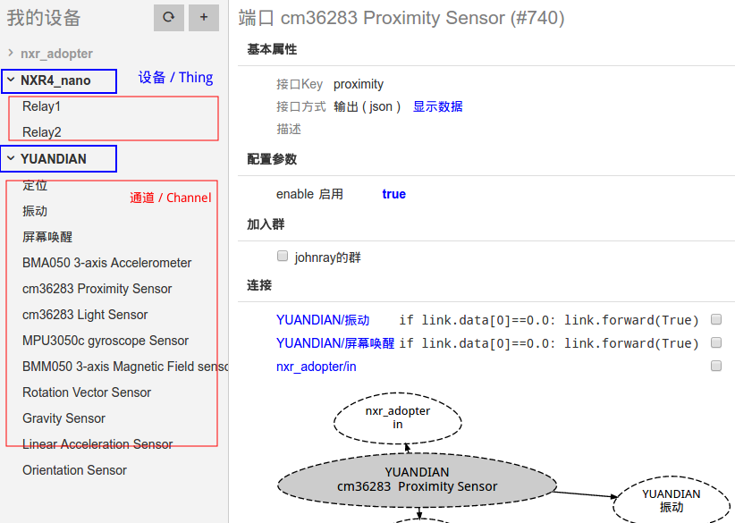
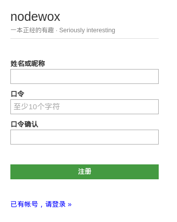

简介
nodewox 是连接智能设备，并协调设备间互动的物联网平台。相较于其它物联网平台，nodewox的精髓在于：
柔性连接 / SDN
自定义设备间连接和规则，实现 “Software Defined Network”。自治互动 / Automated
各设备间按既定规则自动地协同交互。可编程 / Programmable
对设备及其连接编程，赋予设备群“智能”。
简而论之，nodewox = nodes + works。其中
- nodes = 各种设备，实体(Thing)，或者逻辑(Logic)；
- works = 自主互动，协同工作。
正名
子曰“名正则言顺”。理解nodewox，应先了解相关概念：
设备 (Thing)
指可接入 nodewox 网络的“东西”。可以是实体设备，如：灯泡、光谱测试仪、继电器、温湿度传感器、生物信号测试仪、光源等；也可是纯软件的虚拟设备，如：Kalman滤波算法，PID控制算法，低通滤波器，数据转换器，FSM有限状态机等。
通道 (Channel)
每个设备有1个以上通道，用于实现具体功能。也可说，每个设备都是若干通道的集合。通道按方向分，有“输出”和“输入”两种。输出通道为数据源(Source)，输入通道为执行器(Actuator)。
举例
安卓手机安装PaaN程序后，可变成nodewox设备。当接入nodewox网络后，可查看到此手机“设备”中包含众多“通道”：接近传感器，陀螺仪传感器，加速度传感器，GPS定位，光强度传感器，电子罗盘，来电事件，拨号，振动，点亮屏幕等（通道多寡，依硬件能力而定，不一而同）。
以上，各传感器类的通道即是“输出通道”；振动/点亮屏幕/拨号等动作类通道即是“输入通道”。
功能群组 (Group)
从各设备中抽取需要的通道，合成一组，谓之曰“群组”。群内各通道间可设定连接、逻辑、规则等，以构成可实现意图（图灵完备）的体系。
举例
有一个PaaN手机设备，一个4通道继电器设备。从手机设备中选择“加速度传感器”，“接近传感器”，“振动”通道；4通道继电器设备中选择“1#开关”，“2#开关”，共5个通道组成一个功能群。
要求此功能群实现以下意图：
- X方向发生大振动（加速度传感器X数值超过15）时，开启1#开关10秒钟；
- 有物体靠近手机（接近传感器数据为0）时，开启2#开关1秒，并振动手机。
连接 (Link)
在功能群中，定义2个通道之间信号传递方式。连接有方向性：从“输出”到“输入”。简单连接，即透传数据；智能连接，可写脚本按条件改变数据。
末了，po 个图以助消化。

启步
通往nodewox物联网世界的道路，从注册一个账户开始 ——
用PC浏览器注册
请用Chrome, Firefox, Edge等现代浏览器(IE不支持)访问 注册页面 。

在此界面中填写一些简单的信息，即可创建一个nodewox.org账户。注册成功后，请登录。
用移动app注册
先在手机上安装 nodewox.org管理应用。目前，此app仅适用于 Android 4.4 以上设备。